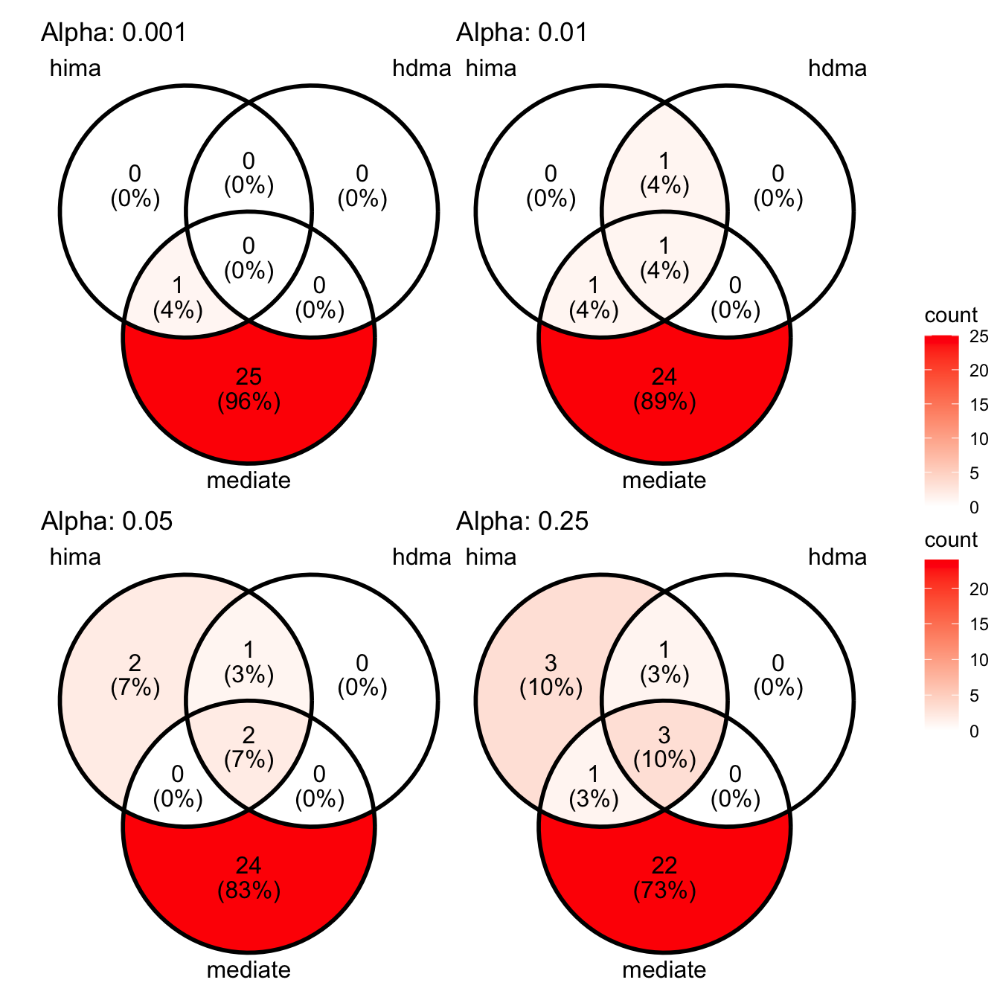
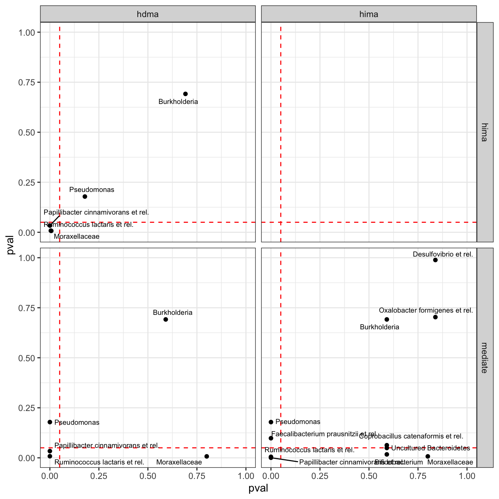

tse <- OKeefeDSData()Comparison of high-dimensional Methods
tse <- transformAssay(tse,
method = "relabundance")
tse <- estimateDiversity(tse,
index = "shannon",
assay.type = "relabundance")tse <- tse[ , !is.na(tse$bmi_group)]
tse <- tse[ , !is.na(tse$nationality)]
colData(tse)$bmi_group <- as.numeric(tse$bmi_group)
colData(tse)$nationality <- as.numeric(factor(tse$nationality)) - 1
tse <- transformAssay(tse,
method = "clr",
pseudocount = 1)
tse <- tse[ , tse$timepoint.within.group == 2]med_res <- mediateAssay(tse,
outcome = "bmi_group",
treatment = "nationality",
assay.type = "clr",
boot = TRUE, sims = 10)[1] "130 left"
[1] "Current mediator: Actinomycetaceae"
[1] "129 left"
[1] "Current mediator: Aerococcus"
[1] "128 left"
[1] "Current mediator: Aeromonas"
[1] "127 left"
[1] "Current mediator: Akkermansia"
[1] "126 left"
[1] "Current mediator: Alcaligenes faecalis et rel."
[1] "125 left"
[1] "Current mediator: Allistipes et rel."
[1] "124 left"
[1] "Current mediator: Anaerobiospirillum"
[1] "123 left"
[1] "Current mediator: Anaerofustis"
[1] "122 left"
[1] "Current mediator: Anaerostipes caccae et rel."
[1] "121 left"
[1] "Current mediator: Anaerotruncus colihominis et rel."
[1] "120 left"
[1] "Current mediator: Anaerovorax odorimutans et rel."
[1] "119 left"
[1] "Current mediator: Aneurinibacillus"
[1] "118 left"
[1] "Current mediator: Aquabacterium"
[1] "117 left"
[1] "Current mediator: Asteroleplasma et rel."
[1] "116 left"
[1] "Current mediator: Atopobium"
[1] "115 left"
[1] "Current mediator: Bacillus"
[1] "114 left"
[1] "Current mediator: Bacteroides fragilis et rel."
[1] "113 left"
[1] "Current mediator: Bacteroides intestinalis et rel."
[1] "112 left"
[1] "Current mediator: Bacteroides ovatus et rel."
[1] "111 left"
[1] "Current mediator: Bacteroides plebeius et rel."
[1] "110 left"
[1] "Current mediator: Bacteroides splachnicus et rel."
[1] "109 left"
[1] "Current mediator: Bacteroides stercoris et rel."
[1] "108 left"
[1] "Current mediator: Bacteroides uniformis et rel."
[1] "107 left"
[1] "Current mediator: Bacteroides vulgatus et rel."
[1] "106 left"
[1] "Current mediator: Bifidobacterium"
[1] "105 left"
[1] "Current mediator: Bilophila et rel."
[1] "104 left"
[1] "Current mediator: Brachyspira"
[1] "103 left"
[1] "Current mediator: Bryantella formatexigens et rel."
[1] "102 left"
[1] "Current mediator: Bulleidia moorei et rel."
[1] "101 left"
[1] "Current mediator: Burkholderia"
[1] "100 left"
[1] "Current mediator: Butyrivibrio crossotus et rel."
[1] "99 left"
[1] "Current mediator: Campylobacter"
[1] "98 left"
[1] "Current mediator: Catenibacterium mitsuokai et rel."
[1] "97 left"
[1] "Current mediator: Clostridium (sensu stricto)"
[1] "96 left"
[1] "Current mediator: Clostridium cellulosi et rel."
[1] "95 left"
[1] "Current mediator: Clostridium colinum et rel."
[1] "94 left"
[1] "Current mediator: Clostridium difficile et rel."
[1] "93 left"
[1] "Current mediator: Clostridium felsineum et rel."
[1] "92 left"
[1] "Current mediator: Clostridium leptum et rel."
[1] "91 left"
[1] "Current mediator: Clostridium nexile et rel."
[1] "90 left"
[1] "Current mediator: Clostridium orbiscindens et rel."
[1] "89 left"
[1] "Current mediator: Clostridium ramosum et rel."
[1] "88 left"
[1] "Current mediator: Clostridium sphenoides et rel."
[1] "87 left"
[1] "Current mediator: Clostridium stercorarium et rel."
[1] "86 left"
[1] "Current mediator: Clostridium symbiosum et rel."
[1] "85 left"
[1] "Current mediator: Clostridium thermocellum et rel."
[1] "84 left"
[1] "Current mediator: Collinsella"
[1] "83 left"
[1] "Current mediator: Coprobacillus catenaformis et rel."
[1] "82 left"
[1] "Current mediator: Coprococcus eutactus et rel."
[1] "81 left"
[1] "Current mediator: Corynebacterium"
[1] "80 left"
[1] "Current mediator: Desulfovibrio et rel."
[1] "79 left"
[1] "Current mediator: Dialister"
[1] "78 left"
[1] "Current mediator: Dorea formicigenerans et rel."
[1] "77 left"
[1] "Current mediator: Eggerthella lenta et rel."
[1] "76 left"
[1] "Current mediator: Enterobacter aerogenes et rel."
[1] "75 left"
[1] "Current mediator: Enterococcus"
[1] "74 left"
[1] "Current mediator: Escherichia coli et rel."
[1] "73 left"
[1] "Current mediator: Eubacterium biforme et rel."
[1] "72 left"
[1] "Current mediator: Eubacterium cylindroides et rel."
[1] "71 left"
[1] "Current mediator: Eubacterium hallii et rel."
[1] "70 left"
[1] "Current mediator: Eubacterium limosum et rel."
[1] "69 left"
[1] "Current mediator: Eubacterium rectale et rel."
[1] "68 left"
[1] "Current mediator: Eubacterium siraeum et rel."
[1] "67 left"
[1] "Current mediator: Eubacterium ventriosum et rel."
[1] "66 left"
[1] "Current mediator: Faecalibacterium prausnitzii et rel."
[1] "65 left"
[1] "Current mediator: Fusobacteria"
[1] "64 left"
[1] "Current mediator: Gemella"
[1] "63 left"
[1] "Current mediator: Granulicatella"
[1] "62 left"
[1] "Current mediator: Haemophilus"
[1] "61 left"
[1] "Current mediator: Helicobacter"
[1] "60 left"
[1] "Current mediator: Klebisiella pneumoniae et rel."
[1] "59 left"
[1] "Current mediator: Lachnobacillus bovis et rel."
[1] "58 left"
[1] "Current mediator: Lachnospira pectinoschiza et rel."
[1] "57 left"
[1] "Current mediator: Lactobacillus catenaformis et rel."
[1] "56 left"
[1] "Current mediator: Lactobacillus gasseri et rel."
[1] "55 left"
[1] "Current mediator: Lactobacillus plantarum et rel."
[1] "54 left"
[1] "Current mediator: Lactobacillus salivarius et rel."
[1] "53 left"
[1] "Current mediator: Lactococcus"
[1] "52 left"
[1] "Current mediator: Leminorella"
[1] "51 left"
[1] "Current mediator: Megamonas hypermegale et rel."
[1] "50 left"
[1] "Current mediator: Megasphaera elsdenii et rel."
[1] "49 left"
[1] "Current mediator: Methylobacterium"
[1] "48 left"
[1] "Current mediator: Micrococcaceae"
[1] "47 left"
[1] "Current mediator: Mitsuokella multiacida et rel."
[1] "46 left"
[1] "Current mediator: Moraxellaceae"
[1] "45 left"
[1] "Current mediator: Novosphingobium"
[1] "44 left"
[1] "Current mediator: Oceanospirillum"
[1] "43 left"
[1] "Current mediator: Oscillospira guillermondii et rel."
[1] "42 left"
[1] "Current mediator: Outgrouping clostridium cluster XIVa"
[1] "41 left"
[1] "Current mediator: Oxalobacter formigenes et rel."
[1] "40 left"
[1] "Current mediator: Papillibacter cinnamivorans et rel."
[1] "39 left"
[1] "Current mediator: Parabacteroides distasonis et rel."
[1] "38 left"
[1] "Current mediator: Peptococcus niger et rel."
[1] "37 left"
[1] "Current mediator: Peptostreptococcus anaerobius et rel."
[1] "36 left"
[1] "Current mediator: Peptostreptococcus micros et rel."
[1] "35 left"
[1] "Current mediator: Phascolarctobacterium faecium et rel."
[1] "34 left"
[1] "Current mediator: Prevotella melaninogenica et rel."
[1] "33 left"
[1] "Current mediator: Prevotella oralis et rel."
[1] "32 left"
[1] "Current mediator: Prevotella ruminicola et rel."
[1] "31 left"
[1] "Current mediator: Prevotella tannerae et rel."
[1] "30 left"
[1] "Current mediator: Propionibacterium"
[1] "29 left"
[1] "Current mediator: Proteus et rel."
[1] "28 left"
[1] "Current mediator: Pseudomonas"
[1] "27 left"
[1] "Current mediator: Roseburia intestinalis et rel."
[1] "26 left"
[1] "Current mediator: Ruminococcus bromii et rel."
[1] "25 left"
[1] "Current mediator: Ruminococcus callidus et rel."
[1] "24 left"
[1] "Current mediator: Ruminococcus gnavus et rel."
[1] "23 left"
[1] "Current mediator: Ruminococcus lactaris et rel."
[1] "22 left"
[1] "Current mediator: Ruminococcus obeum et rel."
[1] "21 left"
[1] "Current mediator: Serratia"
[1] "20 left"
[1] "Current mediator: Sporobacter termitidis et rel."
[1] "19 left"
[1] "Current mediator: Staphylococcus"
[1] "18 left"
[1] "Current mediator: Streptococcus bovis et rel."
[1] "17 left"
[1] "Current mediator: Streptococcus intermedius et rel."
[1] "16 left"
[1] "Current mediator: Streptococcus mitis et rel."
[1] "15 left"
[1] "Current mediator: Subdoligranulum variable at rel."
[1] "14 left"
[1] "Current mediator: Sutterella wadsworthia et rel."
[1] "13 left"
[1] "Current mediator: Tannerella et rel."
[1] "12 left"
[1] "Current mediator: Uncultured Bacteroidetes"
[1] "11 left"
[1] "Current mediator: Uncultured Chroococcales"
[1] "10 left"
[1] "Current mediator: Uncultured Clostridiales I"
[1] "9 left"
[1] "Current mediator: Uncultured Clostridiales II"
[1] "8 left"
[1] "Current mediator: Uncultured Mollicutes"
[1] "7 left"
[1] "Current mediator: Uncultured Selenomonadaceae"
[1] "6 left"
[1] "Current mediator: Veillonella"
[1] "5 left"
[1] "Current mediator: Vibrio"
[1] "4 left"
[1] "Current mediator: Weissella et rel."
[1] "3 left"
[1] "Current mediator: Wissella et rel."
[1] "2 left"
[1] "Current mediator: Xanthomonadaceae"
[1] "1 left"
[1] "Current mediator: Yersinia et rel."hima_res <- mediate_hima(A = tse$nationality,
M = t(assay(tse, "clr")),
Y = tse$bmi_group)
hdma_res <- mediate_hdma(A = tse$nationality,
M = t(assay(tse, "clr")),
Y = tse$bmi_group)
bslmm_res <- mediate_bslmm(A = tse$nationality,
M = t(assay(tse, "clr")),
Y = tse$bmi_group)med_df <- med_res %>%
rename(mediator = Mediator) %>%
full_join(bslmm_res$contributions, by = "mediator") %>%
full_join(hima_res$contributions, by = "mediator",
suffix = c("_bslmm", "")) %>%
full_join(hdma_res$contributions, by = "mediator",
suffix = c("_hima", "_hdma"))plot.venn <- function(med_df, cutoff,
pval_cols = c("ab_pv_hima",
"ab_pv_hdma",
"ACME_adjpval")) {
lis <- lapply(med_df[ , pval_cols],
function(col) which(col < cutoff))
names(lis) <- c("hima", "hdma", "mediate")
p <- ggVennDiagram(lis,
label_geom = "text",
label_alpha = 1) +
scale_fill_gradient(low = "white", high = "red") +
labs(title = paste("Alpha:", cutoff))
return(p)
}(plot.venn(med_df, 0.001) | plot.venn(med_df, 0.01)) /
(plot.venn(med_df, 0.05) | plot.venn(med_df, 0.25)) +
plot_layout(guides = "collect")
get.combos <- function(x) {
pval_combos <- t(combn(m = 2, x[c("mediate", "hima", "hdma")]))
method_combos <- t(combn(m = 2, c("mediate", "hima", "hdma")))
mat <- cbind(x[["mediator"]], pval_combos, method_combos)
return(mat)
}comb_df <- med_df %>%
transmute(mediator,
mediate = ACME_adjpval,
hima = ab_pv_hima,
hdma = ab_pv_hdma) %>%
apply(1, get.combos, simplify = FALSE) %>%
do.call(rbind, .) %>%
as.data.frame() %>%
drop_na() %>%
mutate(V2 = as.numeric(V2),
V3 = as.numeric(V3))
colnames(comb_df) <- c("mediator", "xval", "yval", "xname", "yname")ggplot(comb_df, aes(x = xval, y = yval)) +
geom_hline(yintercept = 0.05,
linetype = "dashed", colour = "red") +
geom_vline(xintercept = 0.05,
linetype = "dashed", colour = "red") +
geom_point() +
scale_x_continuous(limits = c(0, 1)) +
scale_y_continuous(limits = c(0, 1)) +
geom_text_repel(aes(label = mediator), size = 2.5) +
facet_grid(xname ~ yname) +
labs(x = "pval", y = "pval") +
theme_bw()